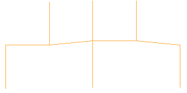
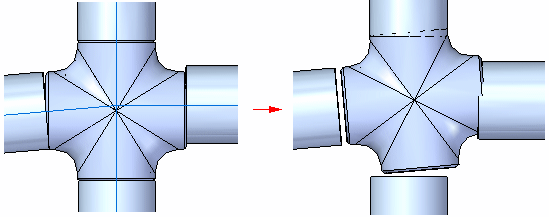

Creating the piping route
The Piping Route command creates the piping route. Creating a piping route consists of:
Defining pipe location and assigning pipe attributes
When you click the Piping Route command, the Piping Option dialog box is displayed to define the information about the pipes and fittings. You can use the Pipes section to specify the pipe location and to assign attributes for the pipe. You can either select the pipes from a standard parts library or browse for pipes outside the library.
If you select the Select from Standard Part Library option, you can use the list to assign attribute for the standard, diameter, and material for the pipe. These attribute values are based on pipe stored in the standard parts library.
If you select the Browse for Pipes option, the Select from Folder becomes active so you can browse for pipes outside the standard parts library. You can also use the Recently Used menu to select any pipes you have recently placed in an assembly.
Before placing a part from outside a standard parts library, you must run the PreparePipingComponents.exe utility located in the Program Files\Siemens\Solid Edge 2023\Piping Route\Piping Utility folder to create the appropriate coordinate systems and variables for the part file you want to place.
Revolved protrusions are not valid components for pipe. Pipes created with the Extrude command populate the variable table with a length entry and are valid.
Assigning pipe fittings
The Fittings section of the dialog box assigns fittings for the piping route. As with pipes, you can select fittings from a standard parts library or browse for pipes outside the library.
When placing fittings stored in a standard parts library, you can select the Automatically Place Fittings option to automatically place fittings in the piping route. Solid Edge delivers the PipeClass.txt file to the Solid Edge Program folder that filters standard fittings during automatic placement. You can select the Verify Availability of Fittings option if you want to query the standard parts library based on specified fitting standard and diameter for each entry in PipeClass.txt. Only the entries that contain fittings meeting the criteria are displayed in the Class list.
The fitting type can be:
-
Threaded fittings
-
Socket weld fittings
-
Butt weld fittings
-
Flanged fittings
-
Pipe penetration cuts
Selecting the path segment
After assigning the pipe attributes and fittings you can click OK to dismiss the Piping Options dialog box. You can then click a path segment to define the route for the pipe. After accepting the path segment, you can click the Preview button on the command bar to create the pipes and place the fittings.
Creating gradient pipe routes
You can create pipe routes with a gradient slope to provide a degree of positive drain for the pipe. When creating a gradient pipe route, you draw a path that contains the desired amount of slope.

During placement of the pipe and fittings, you select the Allow Gradient button and specify the maximum gradient to create the gradient pipe route.

To learn how, see Place pipes and fittings along a gradient pipe route.
After creating the pipe route, you can use the Edit Fitting Alignment button to align the fittings along the gradient pipe. When you the click the button, the
Next Alignment button  and Previous Alignment button
and Previous Alignment button  are displayed to assist in properly aligning the fitting.
are displayed to assist in properly aligning the fitting.

To learn how, see Align the fitting for a gradient pipe.